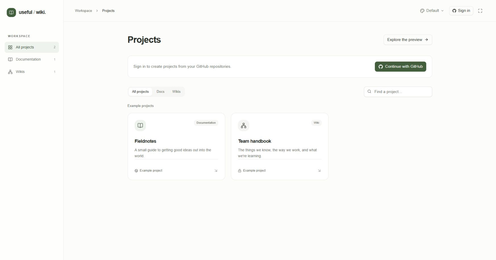
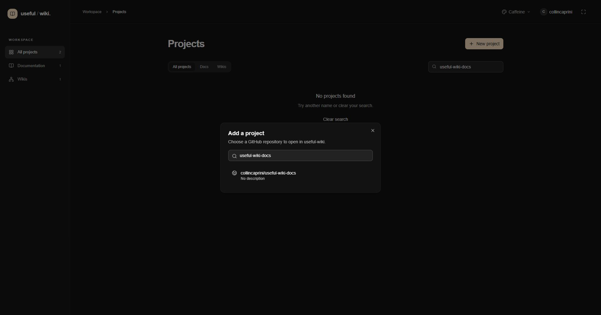

Useful Wiki connects a documentation set to a normal GitHub repository. You can explore without credentials, then connect a repository when your application instance is configured.
Choose Explore the preview on the dashboard, or open /demo on your Useful Wiki instance. Open an example project to try its pages, search, navigation, and editing tools. Local preview and Save preview identify changes that stay in your browser. They do not publish to GitHub or PocketBase. In a connected project, Save to repository creates a Git commit.

Choose an example project from the preview dashboard. Fieldnotes demonstrates Documentation; Team handbook demonstrates Wiki.
To run the preview yourself, follow running locally. The application starts at http://localhost:3001; this documentation does not assume a hosted address.
Return to the main dashboard and choose Continue with GitHub.
Complete GitHub's authorization flow. Useful Wiki requests read:user and repo. The latter is broad; selecting a project inside the app does not restrict that OAuth scope to one repository.
Return to the dashboard. If an organization's repositories are unavailable, check its OAuth approval and SSO requirements in GitHub.

Choose Continue with GitHub from the signed-out dashboard to begin authorization. This local capture shows the sign-in action before use, not a completed login.
Signing in requires the instance's own OAuth and PocketBase configuration. If you are setting up the app, use the developer setup guide. Repository visibility and GitHub permissions determine what each visitor can read and write; see sharing and access.
The dashboard offers All projects, Docs, and Wikis filters. The desktop sidebar also labels the documentation filter Documentation. Find a project… searches project names, descriptions, and owner/repository names within the displayed project set. Clear the search and reset the filter if a project seems missing.
Open a project card to enter it. Signed-out example cards are labeled Example project; signed-in connected projects show their repository names. A project becomes available to other authorized readers through the same shared registration, rather than a separate copy for each person.
Choose New project. In Add a project, search with Find a repository….
The list loads 50 repositories at a time, ordered by their recent GitHub updates. Search filters the repositories already loaded. Use Load more repositories if yours is not present, then search again. Archived repositories cannot be selected.
Select the repository. In Make it your own, enter a Project name. Use Change repository to return to the chooser.
Choose Documentation for an ordered guide with page-tree navigation, or Wiki for discovery through connected pages. Both use ordinary repository files.
Set Branch to the branch the app should read and write. It initially uses the repository's default branch. Choose an existing branch; an empty repository can initialize its default branch when content is saved.
Set Content folder to a repository-relative folder such as docs, or leave it blank for the repository root. A missing folder is created when you save its first page.
Choose Add project. Registration stores project metadata and opens the workspace; it does not change repository contents.

Search the loaded repositories and select collincaprini/useful-wiki-docs. This is the real signed-in repository chooser; selecting a result opens the configuration form.
You need GitHub write access to register a new project. There is one shared registration per repository. Selecting an already registered repository opens that registration; it does not apply newly entered settings. Project settings editing is not available in the current app. Choose the branch, folder, and mode deliberately.
The intended registration for these files is:
Field | Value |
|---|---|
Repository |
|
Project name | Useful Wiki documentation |
Experience | Documentation |
Branch |
|
Content folder |
|

Review the intended repository settings before choosing Add project. This screenshot shows the filled configuration form before submission, not a completed registration.
These settings describe how to connect the repository; this guide does not establish that registration or publish a deployment.

Choose New page to open this dialog, then enter a title and review the format, folder, filename, and resulting location before starting to write.
Open a page and choose Edit page, or choose New page to create one.
For a new page, enter its Title, choose HTML — visual editor or Markdown — Monaco editor, select a Folder, and review its Filename and displayed Location. Choose Start writing.
Write the content. An HTML page's title is independent of its filename. In Markdown, the first level-one heading supplies the displayed title.
Fill in Describe your change, then choose Save to repository. In a local preview the button reads Save preview.
A successful repository save creates a commit on the project's branch. If another change conflicts with yours, preserve the draft and reconcile it with the current file before saving again.
Continue with writing pages and recovering drafts, the editor tools, or finding your way around. Return to the guide index.